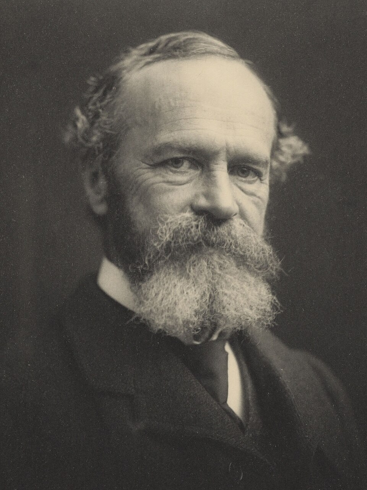

“Everyone knows what attention is. It is the taking possession by the mind, in clear and vivid form, of one out of what seem several simultaneously possible objects or trains of thought.”William James, The Principles of Psychology (1890)
In 1999, two young psychologists at Harvard — Daniel Simons and Christopher Chabris — set up a small video camera and asked half a dozen students to throw a basketball around in a corridor. Two teams, one in white shirts, one in black, weaving and passing. They filmed about a minute of this and added one detail. About halfway through, a person in a full-body gorilla suit strolled into the middle of the frame, faced the camera, beat its chest, and walked out the other side. They then showed the video to volunteers and asked them to count the passes made by the team in white. About half of every audience — including extremely intelligent, attentive, sober adults — failed to see the gorilla. Asked, afterward, whether they had noticed anything unusual, they would say no, with calm conviction. When the experimenters then played the video back and the gorilla strode through the frame, almost half the room gasped. Some accused the experimenters of changing the tape.1
This is the experiment that, more than any other in our field, makes the central fact of attention vivid. Your eyes were open the whole time. The gorilla was on your retina, exactly as it was on everyone else’s. But you did not see it — because seeing is not what your eyes do; it is what your attention permits. Out of an enormous, ceaseless flood of sensory information arriving every waking moment, your brain admits a tiny, lit corridor of it into awareness. Everything else is sent into a darkness so complete that you do not even know it is dark. You walk through life convinced you have a clear view. You have a spotlight. The world is the dark around it.
That is unsettling enough as a curiosity of the laboratory. But it points, before this chapter ends, at something harder. If your conscious life is whatever happens inside that small lit beam, then aiming the beam is one of the most important things you can do with your time on earth — and an entire industry has been built, in our generation, around aiming it for you. The argument of this chapter is that attention is the most valuable currency a human being possesses, and the only one most of us spend without keeping accounts.
Your eyes were open. The gorilla was on your retina. But you did not see it — because seeing is not what eyes do. Seeing is what attention permits.
The Lineage of the IdeaThe Question William James Refused to Settle

The modern study of attention begins, as so much of psychology does, with William James. His brother was the novelist Henry; he himself trained as a physician and then, restless, founded the first American laboratory of psychology at Harvard. In 1890 he published the two thick volumes of The Principles of Psychology, which would not be surpassed as a single-author survey of the field for a century. The chapter on attention opens with the line we have quoted as our epigraph — the most quoted sentence in the field, and one whose final clause repays slowing down to read.
“The taking possession by the mind,” James wrote, “in clear and vivid form, of one out of what seem several simultaneously possible objects.” Three things to notice. First, attention takes possession — it is an act, not a passive receipt. Second, what it takes possession of becomes clear and vivid; everything else is by implication dim. And third, it works by selection: one object is admitted, others — though equally available to the senses — are not. James understood, more than a century ago, that consciousness is not given by the world but quarried from it.
He also wrote, with characteristic honesty, that “everyone knows what attention is” — and then spent eighty pages demonstrating that no one quite does. We have made progress since. We can describe two distinct modes by which the spotlight moves, we can describe a great deal about its narrowness, we can describe the strange machineries by which it can be hijacked. What we still cannot say, more than a hundred years later, is the deepest thing: what attention is, when stripped of its effects. James named the unsolved problem, gave it a long careful look, and moved on. We do the same.
The MechanismTwo Hands on the Beam
The single most useful map of attention is the recognition that two different systems can move it. The cognitive scientist Michael Posner and his successors gave them careful names; we will use the unvarnished ones.2
The first system is the one that snatches your attention against your will. A face appearing in a crowd, a flash of motion at the edge of vision, the sound of your name spoken across a noisy room, a sudden silence where there had been hum — all of these wrench the beam toward themselves with no permission asked. This is bottom-up attention: the world calling, and the spotlight obeying. It is fast, automatic, and shaped by hundreds of thousands of years of selection. Our ancestors who failed to notice the rustle in the grass were eaten; we are the descendants of the ones who could not look away from sudden movement.
The second system is the one you actually run. When you choose to read this sentence rather than glance out the window, to listen for the doorbell rather than to the music, to follow the argument of a difficult book rather than the easier reverie that keeps offering itself — you are running top-down attention, the deliberate hand on the beam. It is what you usually mean when you say “I was paying attention.” It is also, like System 2 in our second chapter, tiring, slow, and finite. There is only so much top-down attention you can spend in a day before the cheaper bottom-up system takes over by default.
Bottom-up attention — the involuntary capture of awareness by something salient in the environment (a flash, a face, a name). Fast, automatic, hard to override. Top-down attention — the deliberate, effortful direction of awareness by your goals (reading this, listening for a child, doing the maths). Slow, costly, easily exhausted.
The two systems are in constant negotiation, and the negotiation is the texture of a life. When the top-down hand is strong — well-rested, motivated, free of competing demands — the spotlight does what you ask of it: the book gets read, the deep conversation gets had, the work gets done. When the top-down hand is weak — tired, hungry, scrolling, anxious — bottom-up wins, and the spotlight jumps wherever the world is loudest. Most of modern technology, we will see, is engineered to be the loudest thing in the room.
What the Painters KnewTwo Pictures of the Same Faculty
Long before the laboratories, the painters knew about the two hands. Set Vermeer’s Astronomer, our frontispiece, beside the next two paintings, and you can read the whole science of attention without a word.
And now compare its opposite — not the cacophony, but the act of being chosen.
Three pictures of one faculty. Vermeer shows you the deliberate, top-down beam at full strength — one quiet object filling a whole life. Bruegel shows you the bottom-up flood, every fragment claiming the spotlight at once, no central image possible. Caravaggio shows you the moment between them: the beam taken by something larger than your plan. A painter who could draw a finger of light into a dark room was diagnosing attention three centuries before the laboratory.
The Cost of the BeamWhat You Do Not See Because You Were Looking
Return now to the gorilla, because the implication is more sobering than the experiment is funny. The technical name for what happens to the half of viewers who miss it is inattentional blindness — the failure to notice something fully visible because attention is loaded onto another task. The pioneer was Ulric Neisser in the 1970s; Daniel Simons and Christopher Chabris made it famous in 1999 with the gorilla; Irvin Rock and Arien Mack, in long careful work, showed that even the simplest unattended objects can be looked at directly and not seen.3
The implications reach far beyond party tricks. Radiologists looking for tumours in lung scans have been shown to miss, with surprising frequency, a small image of a gorilla deliberately embedded in the scan — 83 percent of expert radiologists in one study failed to notice it.4 Drivers concentrating on their lane miss motorcycles and pedestrians. Police officers running after a suspect have been shown to miss, walking past them, the very crime they are investigating — an alleged beating taking place in plain sight on the street they were running through (the “Boston police” study of Chabris and colleagues).5 The consequences of attentional load are not theoretical. Hospitals, traffic, courts, and security all rest on a faculty that, in its proper functioning, makes us blind.
A close cousin is change blindness, in which a visible scene changes in front of you and you do not notice. In the most famous demonstration, an experimenter stops a passerby on a college campus to ask directions; partway through the conversation, two workers carrying a door pass between them, and the experimenter is swapped for a different person of different height and clothes. Most passersby continue the conversation without noticing the substitution at all.6 What you think of as “watching” a scene is, almost always, watching the small handful of features your attention has caught and assuming the rest.
A radiologist hunting for tumours can fail to see a gorilla on the scan. A witness can fail to see the person they are talking to be swapped for a different person. These are not the failures of inattentive minds. They are the failures of attentive ones.
Where It Touches Your LifeThe Industry Built to Hold the Beam
Until quite recently in human history, the things that competed for your attention were the things in your physical surroundings: a fire, a face, a noise. They had no interest in winning. In the last twenty years a remarkable thing has happened: a multi-billion-dollar industry has emerged whose entire business model is the capture of human attention for as many waking hours as possible, by methods refined against the inattentive-blindness and bottom-up-capture mechanisms we have just described. The phone in your pocket is the most sophisticated attention-hijacking instrument ever built. Its makers know everything we have just outlined and have used it to make the device very hard to put down.
Three of its principal techniques are worth naming, because once you can see them, they lose some of their power.
The variable-reward feed. Slot machines have known for a century that the most addictive schedule of reward is not a steady one but a variable one — the next pull might pay, or might not, and you do not know which. The behaviourist B. F. Skinner showed that animals trained on variable rewards keep pressing the lever long after the rewards have stopped. Every social-media feed is, in essence, a slot machine: you scroll because the next post might be the one that delights you, and you cannot know until you pull. The feed is calibrated, by armies of engineers measuring milliseconds, to pay out just often enough to keep your thumb moving.7
The notification, the red dot, the badge count. A pure use of bottom-up capture. Your top-down hand — whatever you were doing — is broken whenever the device produces a flash, a vibration, a numbered badge. You may have learned to ignore some of these consciously, but the orienting reflex is largely below conscious control. A single phone face-up on a table has been shown, in controlled studies, to lower the quality of an in-person conversation taking place over it.8 The mere availability of the interruption costs attention.
The infinite scroll. The stopping cue — the moment when a piece of content ends and you might reasonably ask, do I want more? — has been engineered out. There is no bottom of the page. You do not decide to keep going; you merely fail to decide to stop, and that failure is the entire business model. The interface is built to make stopping require an act of will against an environment that supplies none.
These are not accusations of malice. They are accurate descriptions of an industry doing its job. The job happens to be the most efficient extraction of the most valuable thing you possess. Tristan Harris — a former design ethicist at Google — has compared it to environmental harm: as the manufacture of soft drinks externalised the cost of bad teeth, the manufacture of attention-grabbing software externalises the cost of fragmented minds. The companies are doing exactly what we built them to do. The question is whether we will keep letting them.9
The Multitasking MythWhy You Cannot Do Two Things At Once
The folk theory of attention says that, with practice, a person can “do several things at once” — talk on the phone while writing an email, watch a film while answering messages, listen to a colleague while checking notifications. Decades of careful work in our field have established, beyond any serious doubt, that this is not what is happening. There is no parallel processing of cognitively demanding tasks; what looks like multitasking is, in every case, rapid switching between tasks, with a cost paid each time.10
The cost is twofold. First is the time it takes to re-orient: re-finding your place, recalling where you were, reloading the relevant context. This is measurable in seconds for a small task and minutes for a deep one. Second, and worse, is the quality of the attention you bring after the switch. A mind that has just torn its top-down hand off one thing and clamped it to another arrives in a degraded state — less able to spot subtlety, less able to remember what it has just seen, more prone to error. The most uncomfortable finding of the decade is that chronic heavy multitaskers are not, as they tend to believe, better at multitasking. They are worse — worse at filtering distraction, worse at switching between tasks, worse on every measure tested.11 The thing that feels like a useful skill is, in the data, an active erosion of the underlying faculty.
The honest consequence, and it is hard to live with, is that any work which actually requires depth — reading a difficult chapter, building a careful argument, holding a hard conversation, learning something complex — requires the conditions of depth. Cal Newport calls this regime deep work; it has older names in older traditions, including monastic ones.12 Its prerequisite is unfashionable and unambiguous: an extended period in which the spotlight is not allowed to be jerked away. For the practitioner of any serious craft, building the conditions of deep work has become an act of resistance against an environment engineered against it.
The Objection That Matters“But I Have to Be Reachable. I Cannot Just Focus.”
Here is what an honest reader pushes back with. You are describing a life that is no longer available to ordinary people. I have a job that requires me to respond. I have children who need me reachable. I have a manager who measures me in part by whether I respond inside the hour. You are romanticising a kind of monastic concentration that is incompatible with how the modern world is actually built. What am I supposed to do?
The objection is fair, and the answer is not “turn off your phone forever.” The answer is, as it has been in two chapters before this one, to stop trying to win the fight inside the moment of temptation — where the fast bottom-up system always wins — and instead to design the conditions in which top-down attention is the cheaper path. A handful of small, lawful arrangements do more than any amount of willpower.
Choose, deliberately, a window of the day in which the spotlight will not be touched — an hour, perhaps two, when the phone is in another room and notifications are off. Do whatever truly matters in that window. Then return to the world’s noise without guilt. Most professionals discover, when they try this, that the protected hours produce more useful output than the rest of the working day combined — and that the world’s urgency, when politely deferred, mostly was not urgent.
Remove the cheapest captures permanently. Turn off badge counts. Remove the most addictive applications from the home screen. Greyscale the display, if you have the discipline; many find it reduces the device’s pull instantly and considerably. Move email to two or three scheduled check-ins per day rather than a constant stream. These are environmental changes, not character changes. They work because they make doing the right thing the path of least resistance, which is the only kind of behaviour change that survives a hard day.
And practise the deep things on purpose. Reading a long book, walking without a podcast, sitting with no input for ten minutes — these are not deprivations. They are calisthenics for a faculty that, like any other, atrophies when not used and strengthens when it is. A person whose top-down attention has been allowed to weaken to a few minutes at a time is a person to whom an entire range of human goods — concentration, deep love, sustained craft, prayer if you have it, study — has become quietly inaccessible. None of those goods are kept locked away by anyone but the owner of the spotlight.
When the Beam Will Not HoldWhat ADHD Reveals About Attention
Attention-deficit / hyperactivity disorder is not, despite the name, a deficit of attention as much as a difficulty directing it. The patient often pays intense attention — just not always to the thing they intended. The top-down hand is, for biological reasons, weaker; bottom-up wins more of the time. This is not a moral failing or a fashionable diagnosis. It is a genuine, neurodevelopmental difference, well supported by imaging and genetic data, that responds in many cases dramatically to medication that strengthens the top-down system. Treating it is one of the more humane things modern medicine does.13
What ADHD reveals, for the rest of us, is how much of ordinary functioning depends on a faculty we usually take for granted. To watch a bright, capable, sincere person struggle for hours to begin a task they care about — not from laziness but because the top-down hand cannot quite seize the beam — is to understand that what we call willpower is, in part, a particular setting of an attentional system. Some people are born with it weighted heavier; some, with it lighter. We are not equal in this. We can each, however, design our environment in respect of the setting we have, and the work of this chapter is essentially that practice.
“What does it mean to pay attention?”
A word everyone understands and almost no one can define. Six who have spent their lives with it.
“A selection operation over the sensory stream. The brain receives more than it can use; attention is the operation that picks. Without it there is no perception, no thought, no consciousness as you know it — just noise.”
“In my consulting room, attention is what people say they have lost. The shape of their suffering — depression, anxiety, ADHD, addiction — is in part the shape of their attention having gone where they do not want it to go and refusing to come back.”
“A market. The most valuable substance in a digital economy. The reason your face is the product is that your eyes are the means of production. Every interface you use was tuned, in milliseconds, against the question of how long you can be made to look.”
“A practice. In every old tradition — sitting in zazen, lectio divina, hesychast prayer, the artist’s hours at the easel — the central discipline is the same: the deliberate return of attention to a single object when it has wandered. The new science describes what these traditions have been training for two thousand years.”
“Hold the techno-pessimism a little loosely. Phones are bad for many things and not for everything; the data on depression and screens is real but messier than the headlines suggest, and the medieval monks complained about distraction too. Distinguish what attention research has actually shown from what cultural critics extrapolate from it.”
“Whatever attention is, here is the practical truth: it is what you spend your life on. The collection of things that have, in fact, occupied your spotlight over forty years is the life you have, in fact, led. If you do not like the answer, the work is to redirect the beam — not because focus is a virtue but because nothing else is yours to spend.”
Myth vs. RealitySetting the Record Straight
What We Like to Believe
“I see the room I am in. I am aware of what is around me. I can do two things at once if I have practice. My attention is something I can dial up by trying harder. If I want to focus, I focus.”
What the Evidence Shows
You see only what your spotlight has lit; the rest of the room is, functionally, not perceived. There is no parallel processing of demanding tasks — only switching, with a real cost each time. Top-down attention is a finite, depletable resource, not an act of will. The most reliable way to focus is not to try harder but to remove what was going to interrupt you before the interruption arrives.
The core of this chapter — inattentional blindness, change blindness, the two-mode model, task-switching costs — replicates robustly. Some of the more colourful claims around it do not. The popular notion of an average attention span shrinking to “eight seconds” is a misattributed factoid with no solid source. The strongest readings of the “media multitaskers do worse on every measure” study have not always replicated. The link between screen time and adolescent mental health is real in direction but smaller in effect size than the public discourse implies. The trend of the field is toward the picture given here; the specific numbers, on any given day, should be checked.
The lines worth carrying out of this chapter.
- Seeing is not what eyes do. Seeing is what attention permits. The gorilla was on your retina; you did not see it. Most of life, this is how perception works.
- Two hands move the beam. Bottom-up (involuntary, fast, won’t be denied) and top-down (deliberate, finite, easily depleted). Most of modern technology is built for the first hand to win.
- There is no multitasking, only switching. Every switch costs time and quality. Chronic switchers are worse at switching, not better.
- The phone is an attention-extraction instrument. Variable rewards, bottom-up captures, infinite scroll — an industry built around the most valuable thing you own. None of this is malice. All of it is design.
- Don’t fight inside the moment. Design the conditions before it arrives. Protected windows, fewer notifications, the addictive apps removed — willpower is no substitute for an environment that makes the right thing easy.
If you keep one sentence: attention is the only currency you spend that is also the substance of your life — and the work of a serious mind is to decide, on purpose, where to spend it.
Research ReferencesSources & Notes
- ScienceSimons, D. J. & Chabris, C. F., “Gorillas in our midst: sustained inattentional blindness for dynamic events,” Perception 28 (1999).
- SciencePosner, M. I. & Petersen, S. E., “The attention system of the human brain,” Annual Review of Neuroscience 13 (1990); and Posner’s later orienting/alerting/executive framework.
- ReferenceMack, A. & Rock, I., Inattentional Blindness (1998); Neisser, U., “Selective looking,” Cognitive Psychology (1975).
- ScienceDrew, T., Võ, M. L.-H. & Wolfe, J. M., “The invisible gorilla strikes again: sustained inattentional blindness in expert observers,” Psychological Science (2013) — the radiologist study.
- ScienceChabris, C. F., Weinberger, A., Fontaine, M. & Simons, D. J., “You do not talk about Fight Club if you do not notice Fight Club,” i-Perception (2011) — the “Boston police” chase study.
- ScienceSimons, D. J. & Levin, D. T., “Failure to detect changes to people during a real-world interaction,” Psychonomic Bulletin & Review (1998) — the “door study.”
- ReferenceOn variable rewards: Skinner, B. F., Schedules of Reinforcement (1957). On the application to product design: Eyal, N., Hooked (2014); Harris, T., public writing on humane technology.
- ScienceWard, A. F. et al., “Brain drain: the mere presence of one’s own smartphone reduces available cognitive capacity,” Journal of the Association for Consumer Research (2017); Przybylski, A. K. & Weinstein, N., “Can you connect with me now?” Journal of Social and Personal Relationships (2013).
- ReferenceHarris, T., “How a handful of tech companies control billions of minds every day” (TED, 2017); Center for Humane Technology.
- ScienceRubinstein, J. S., Meyer, D. E. & Evans, J. E., “Executive control of cognitive processes in task switching,” Journal of Experimental Psychology: Human Perception and Performance (2001).
- DebatedOphir, E., Nass, C. & Wagner, A. D., “Cognitive control in media multitaskers,” PNAS (2009). Subsequent replications have given a more mixed picture; effect direction holds, size and consistency are debated.
- ReferenceNewport, C., Deep Work (2016); Digital Minimalism (2019).
- ScienceOn ADHD: Barkley, R. A., Attention-Deficit Hyperactivity Disorder (4th ed., 2014); Faraone, S. V. et al., consensus statements on the validity of ADHD as a clinical entity.
Citations support the science presented; a production edition would carry full bibliographic detail and DOIs, externally verified.
Going FurtherRecommended Books & Viewing
Read
- Christopher Chabris & Daniel Simons, The Invisible Gorilla (2010)
- Cal Newport, Deep Work (2016) & Digital Minimalism (2019)
- Tristan Harris, public writing on humane technology; Jenny Odell, How to Do Nothing (2019)
- William James, The Principles of Psychology (1890) — chapter on Attention
Watch
- Simons & Chabris, the original Invisible Gorilla video (try it on a friend first)
- Tristan Harris, “How a handful of tech companies control billions of minds every day” (TED, 2017)
- The Social Dilemma (2020) — documentary, with the usual caveats